경영지도사-1차-2교시(구) (2015-05-16 기출문제)
1과목: 기업진단론
1. 금융기관이 자금차입자의 원리금 지급능력을 판단하기 위한 경영분석은?
- 신용분석
- 증권분석
- 가치사슬분석
- 자본상태분석
- 채권등급판정분석
(정답률: 알수없음)

2. 기업진단의 대상인 경영활동 부문으로 옳은 것을 모두 고른 것은?
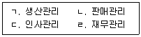
- ㄱ, ㄴ
- ㄴ, ㄷ
- ㄷ, ㄹ
- ㄴ, ㄷ, ㄹ
- ㄱ, ㄴ, ㄷ, ㄹ
(정답률: 알수없음)
3. 기업의 영업레버리지에 관한 설명으로 옳지 않은 것은?
- 고정영업비가 많을수록 영업레버리지가 커진다.
- 일반적으로 자본집약적 산업은 영업레버리지도가 높다.
- 공헌이익을 영업이익으로 나누어 영업레버리지도를 산출한다.
- 영업레버리지도는 매출액변화율 대비 주당이익변화율의 비율로 산출한다.
- 영업레버리지도가 높다는 것은 그 기업의 영업이익이 많다는 것을 나타내는 것은 아니며, 단지 경영위험이 높다는 것을 나타내는 것이다.
(정답률: 알수없음)
4. 영업이익에서 법인세를 공제한 값에서 기업의 투하자본 조달비용을 차감한 것은?
- 표준 시장부가가치(MVA)
- 주주 부가가치(SVA)
- 채권자 부가가치(BVA)
- 기업자본 부가가치(ESVA)
- 경제적 부가가치(EVA)
(정답률: 알수없음)
5. 기업부실의 개념에 관한 설명으로 옳지 않은 것은?
- 경제적 실패란 기업의 평균투자수익률이 자본조달비용에 미달하는 경우를 뜻한다.
- 경제적 실패란 기업의 총수익이 총비용에 미달하는 경우를 뜻한다.
- 기술적 지급불능이란 기업의 총자본가치가 자기자본가치를 넘어 실질순자산가치가 마이너스가 되는 경우이다.
- 실질적 지급불능이란 기업의 총부채가치가 총자산가치보다 커서 자본잠식이 발생한 경우를 뜻한다.
- 파산이란 기업이 법원에 의하여 파산선고가 공식적으로 내려진 경우를 뜻한다.
(정답률: 알수없음)
6. 재무적 부실징후로 옳지 않은 것은?
- 재고자산의 감소
- 매출액의 지속적 감소
- 과다한 금융비용
- 현금 ㆍ 예금의 감소
- 자본잠식의 심화
(정답률: 알수없음)
7. 기업체질 삼각형(business quality triangle)에 관한 설명이다. ( )에 옳게 나열된 것은?
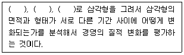
- 매출원가, 평판, 투자수익률
- 매출액, 기업가정신, 평판
- 매출원가, 시장점유율, 투자수익률
- 매출액, 시장점유율, 투자수익률
- 매출액, 영업비용, 시장점유율
(정답률: 알수없음)
8. 표준비율에 해당하지 않은 것은?
- 과거평균비율
- 국가평균 비율
- 일반적 경험비율
- 실현가능 목표비율
- 산업평균비율
(정답률: 알수없음)
9. 포터(M. E. Porter)의 산업구조분석 요인 중 구매자의 교섭력이 강하다고 볼 수 없는 것은?
- 교체비용이 거의 들지 않는 경우이다.
- 제품이 규격화되어 있거나 제품차별화가 거의 되어 있지 않은 경우이다.
- 구매집중도가 높거나 공급자의 판매량 중에서 상당량을 차지할 경우이다.
- 공급자의 판매량이 구매자의 생산 및 경영활동에 차지하는 비중이 매우 큰 경우이다.
- 구매자가 중간 도ㆍ소매업자로서 소비자들의 구매결정이나 제품선정에 결정적인 영향을 미치는 경우이다.
(정답률: 알수없음)
10. 기업의 재무레버리지도가 1.5일 때 옳은 것은?
- 영업이익이 10% 증가할 때 주당순이익은 15% 감소한다는 의미이다.
- 영업이익이 10% 감소할 때 주당순이익은 15% 감소한다는 의미이다.
- 매출액이 10% 증가할 때 주당순이익은 15% 증가한다는 의미이다.
- 매출액이 10% 증가할 때 영업이익은 15% 증가한다는 의미이다.
- 매출액이 10% 증가할 때 주당순이익은 15% 감소한다는 의미이다.
(정답률: 알수없음)
11. 손익분기점 분석에서 안전율(margin of safety)에 관한 설명으로 옳은 것은?
- 예상판매량이 손익분기점에서의 판매량을 크게 상회하면 할수록 미래수익성의 안전도는 높다고 할 수 있다.
- 실제판매량이 손익분기점에서의 판매량을 크게 하회하면 할수록 미래수익성의 안전도는 높다고 할 수 있다.
- 예상판매량이 실제판매량을 크게 하회하면 할수록 미래수익성의 안전도는 높다고 할 수 있다.
- 손익분기점에서의 판매량이 실제판매량을 크게 상회하면 할수록 미래수익성의 안전도는 높다고 할 수 있다.
- 실제판매량이 이상적판매량을 크게 하회하면 할수록 미래수익성의 안전도는 높다고 할 수 있다.
(정답률: 알수없음)
12. 손익분기점분석에 관한 설명으로 옳지 않은 것은?
- 손익분기점은 총고정비를 단위당 공헌이익으로 나눈 것이다.
- 손익분기점이 낮을수록 경영위험이 높다는 것을 의미한다.
- 손익분기점분석은 매출액 또는 매출량이 어느 정도 되어야 영업비용을 보상하고 영업이익이 발생하기 시작하는가를 파악하는 것이다.
- 손익분기점 수준이 낮다는 것은 영업성과의 마진이 상대적으로 크다는 것을 의미한다.
- 손익분기점은 총수익과 총영업비용이 같아 영업이익이 영(0)이 되는 판매량이나 판매액을 의미한다.
(정답률: 알수없음)
13. 경영분석에 관한 설명으로 옳은 것은?
- 경영분석에서 재무상태표, 포괄손익계산서, 현금흐름표 등과 같이 이미 발표된 회계자료를 이용한 분석은 큰 의미가 없다.
- 경영분석은 매출액, 경상이익, 세후순이익 등과 같은 포괄손익계산서의 주요 항목에 국한된 재무분석을 의미한다.
- 경영분석은 기업의 내부자 및 외부자의 경제적 의사결정에 필요한 정보를 산출하기 위한 회계자료 및 비회계자료에 대한 분석을 의미한다.
- 경영분석은 기업의 과거 성과와 미래의 예측을 위한 정보를 산출하는 것이므로 계량화가 불가능한 내용은 다루지 않는다.
- 경영분석은 기업의 경영상태를 분석하여 경영자의 의사결정에 필요한 정보를 생산하는 것이므로 경제동향이나 자본시장동향과 같은 분석은 불필요하다.
(정답률: 알수없음)
14. 경영분석의 범위 중 재무분석의 범위가 아닌 것은?
- 경영자능력 분석
- 재무제표분석
- 투자수익률(ROI) 분석
- 레버리지(leverage) 분석
- 수익성 분석
(정답률: 알수없음)
15. 비율분석의 자료 중 비회계자료는?
- 재무상태표
- 포괄손익계산서
- 자본시장자료
- 현금흐름표
- 이익잉여금처분계산서
(정답률: 알수없음)
16. 매출액을 100%로 하고 각 비용, 수익항목의 구성비를 백분율로 표시하여 작성하는 재무제표는?
- 공통형 재무상태표
- 지수형 재무상태표
- 공통형 손익계산서
- 지수형 손익계산서
- 실수형 재무제표
(정답률: 알수없음)
17. 월(A. Wall)에 의하여 최초로 제시된 기업의 경영성과와 재무상태를 종합적으로 평가할 수 있는 분석기법은?
- 점수법
- 실수법
- 지수법
- 관계법
- 종합법
(정답률: 알수없음)
18. 포괄손익계산서에 관한 설명으로 옳지 않은 것은?
- 포괄손익계산서는 일정기간 동안의 기업의 경영성과를 나타내는 재무제표이다.
- 영업이익은 매출총이익에서 판매비와 관리비를 차감하여 산출한다.
- 매출총이익은 매출액에서 매출원가를 차감하여 산출한다.
- 총포괄손익은 당기순이익에서 기타포괄손익을 가감하고 기타포괄이익과 관련된 법인세를 차감하여 산출한다.
- 당기순이익은 법인세차감전순이익에서 법인세와 지급이자를 차감하여 산출한다.
(정답률: 알수없음)
19. 현금흐름표의 재무활동 현금흐름에 영향을 미치는 항목으로 옳지 않은 것은?
- 차입금의 상환
- 유가증권 취득
- 사채 발행
- 유상증자
- 자기주식 취득
(정답률: 알수없음)
20. 재무상태표 항목에서 총자산을 100으로 하고 포괄손익계산서 항목은 매출액을 100으로 하여 백분율로 나타내는 비율은?
- 정태비율
- 동태비율
- 혼합비율
- 구성비율
- 관계비율
(정답률: 알수없음)
21. 자본시장과 기업정보에 관한 설명으로 옳은 것은?
- 기업이 관련 정보를 외부에 제공하는 목적은 기업의 이해관계자들에게 정보를 제공하기 위함이다.
- 기업의 회계정보는 기업 외부로 유출할 수 없다.
- 기업이 외부와의 거래에 있어서 외상과 같은 신용거래가 없고 현금거래만 한다면 현금흐름과 이익흐름은 동일하다.
- 외부감사인의 재무제표에 대한 감사의견은 해당기업에 대한 투자적정성을 나타낸다.
- 회계정보와 주가가 관련성이 있다는 주장은 아직 검증되지 않았다.
(정답률: 알수없음)
22. 다음 회계자료를 이용한 매출액순이익률은?
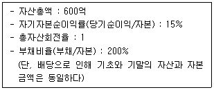
- 5%
- 6%
- 7%
- 8%
- 9%
(정답률: 알수없음)
23. 주가수익비율(PER)과 주가순자산비율(PBR)에 관한 설명으로 옳지 않은 것은?
- 주가수익비율(PER)은 주가를 주당순이익으로 나눈 비율이다.
- 주가순자산비율(PBR)은 주가를 주당순자산으로 나눈 비율이다.
- 주가수익비율(PER)은 수익가치에 대비한 상대적 주가수준을 나타내는 지표이다.
- 주가순자산비율(PBR)은 자산가치에 대비한 상대적 주가수준을 측정하는 지표이다.
- 주가수익비율(PER)를 주가순자산비율(PBR)로 나누면 주가매출액비율(PSR)이 된다.
(정답률: 알수없음)
24. 재무비율에 관한 설명으로 옳지 않은 것은?
- 자기자본순이익률(ROE)과 부채비율이 고정되어 있다면 매출액순이익율과 총자산회전율은 반비례관계이다.
- 이자보상비율이 낮은 기업일수록 자금조달과 자금운용이 원활하고 추가적인 부채조달이 용이하다.
- 유동비율이 높다는 것은 기업의 안전성측면에서는 유리하지만 과도하게 높을 경우 수익성 측면에서는 불리할 수 있다.
- 총자산회전율이 높다는 것은 기업이 보유하고 있는 자원인 자산을 효율적으로 활용하고 있다는 것을 의미한다.
- 주가순자산비율(PBR)이 높다는 것은 시장의 투자자들이 해당 기업의 미래 이익 증가를 예상한 결과일 수도 있지만, 자산의 장부가치가 시장가치보다 낮게 평가되었거나, 주가 자체가 고평가 되었다고 볼 수 있다.
(정답률: 알수없음)
25. 기준연도를 정하여 기준연도의 재무상태표, 포괄손익계산서 각 항목을 100으로 놓고 그 이후 연도부터는 비교연도 각 항목의 잔액을 기준연도 각 항목 잔액의 백분율을 계산하여 그 증감의 추세를 볼 수 있도록 한 것은?
- 공통형 재무제표
- 지수형 재무제표
- 잔액형 재무제표
- 추세형 재무제표
- 종합형 재무제표
(정답률: 알수없음)
26. 경제분석에 관한 설명으로 옳지 않은 것은?
- 경기지수는 선행지수, 동행지수, 후행지수로 나누어 진다.
- 경제성장은 보통 국내총생산(GDP)의 증가율로 측정한다.
- 경기가 침체하면서 물가가 상승하는 경우를 스태그플레이션(stagflation)이라 한다.
- 산업분석은 산업간 분석(inter-industry analysis)과 산업내(intra-industry analysis) 분석을 포함한다.
- 자국화폐의 평가절상은 수출비중이 높은 기업의 수출경쟁력을 강화시킨다.
(정답률: 알수없음)
27. 기업가치평가에 관한 설명으로 옳지 않은 것은?
- 기업가치는 미래에 기대되는 잉여현금흐름(free cash flow)을 가중평균자본비용(WACC)으로 할인한 것이다.
- 영업이익을 기초로 한 잉여현금흐름 추정 시 감가상각비를 영업이익에 가산하는 이유는 감가상각비가 비현금성 비용이기 때문이다.
- 가중평균자본비용(WACC)은 자본조달항목별 자본비용을 자본조달항목의 가중치를 이용하여 측정한다.
- 초과이익모형에 의하면 주주지분가치는 현재의 자기자본금액에 미래 초과이익의 현재가치를 더한 값이다.
- 주식의 자본비용은 증권시장선(security market line)을 이용하여 추정할 수 있으며, 이때 위험의 단위는 주식의 총위험이다.
(정답률: 알수없음)
28. 기업 인수ㆍ합병(M&A)에 관한 설명으로 옳은 것은?
- 적대적 M&A 방어수단으로 자본구조 재구성, 백기사, 그린메일 등이 있다.
- 기업합병(merger)은 합병기업 중 한 기업이 존속기업으로 남아 있기 때문에 신설법인 설립은 불가능하다.
- 우호적 M&A는 피인수기업의 반대 또는 의사와 관계없이 피인수기업 주주에게 직접 공개매수제의를 하거나 주식매집을 통해 이루어진다.
- 비상장기업과 상장기업과의 M&A는 금지되어 있다.
- M&A가 이루어지는 방법과 조건에 따라 시너지효과(synergy effect)가 달라지기 때문에 주주의 부에 영향을 미치지 않는다.
(정답률: 알수없음)
29. 총자산은 8,000원, 자본은 4,500원, 총부채 중 차입금은 60%, 외상매입금이 40%이며, 차입금에 대한 이자율은 8%이다. 영업이익이 400원이라고 할 때 이자보상비율은 얼마인가?
- 1.5배
- 1.8배
- 2.0배
- 2.4배
- 3.0배
(정답률: 알수없음)
30. 재무적 안정성을 평가하는데 적절한 재무비율로 옳은 것은?
- 당좌비율
- 현금비율
- 레버리지비율
- 총자산회전율
- 매출액증가율
(정답률: 알수없음)
31. 신용위험의 결정요인으로서 Sinkey의 다섯 가지요인(5C)으로 옳지 않은 것은?
- 기업 문화(Culture)
- 상환능력(Capacity)
- 자본력(Capital)
- 담보력(Collateral)
- 경영자 인격(Character)
(정답률: 알수없음)
32. 재무비율 중 활동성 비율로 옳지 않은 것은?
- 매출채권회전기간
- 총자산회전율
- 재고자산회전율
- 유형자산회전율
- 매출액증가율
(정답률: 알수없음)
33. 유동자산이 40억원, 비유동자산이 50억원, 유동부채가 20억원, 비유동부채가 16억원일 때 유동비율은?
- 50%
- 100%
- 150%
- 200%
- 250%
(정답률: 알수없음)
34. (주)한국의 재무상태표이다. 이 기업의 순운전자본비율은? (단위 : 원)
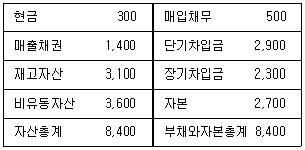
- 13.10%
- 16.67%
- 19.⑤%
- 22.61%
- 29.76%
(정답률: 알수없음)
35. 현금흐름할인평가모형(DCF)에 관한 설명으로 옳지 않은 것은?
- 배당할인모형은 주당배당금을 자기자본비용으로 나눈 값이다.
- 이익평가모형은 주당순이익을 자기자본비용으로 나눈 값이다.
- 잉여현금흐름모형은 기업전체잉여현금흐름을 가중평균자본비용으로 나눈 값이다.
- 경제부가가치모형은 기업전체초과이익흐름을 가중편균자본비용으로 나눈 값이다.
- 초과이익모형은 주주초과이익흐름을 가중평균자본비용으로 나눈 값이다.
(정답률: 알수없음)
36. A기업과 B기업의 총자산이익률(ROA)은 같지만 A기업의 총자산회전율은 B기업보다 크다. 또한 A기업이 B기업에 비해 자기자본이익률(ROE)이 작다. 이 때 A기업과 B기업의 재무비율의 크기에 관한 설명으로 옳은 것은?
- 매출액순이익률: A＞B, 부채비율: A＞B
- 매출액순이익률: A＞B, 부채비율: A＜B
- 매출액순이익률: A＜B, 부채비율: A＞B
- 매출액순이익률: A＜B, 부채비율: A＜B
- 매출액순이익률: A＜B, 부채비율: A=B
(정답률: 알수없음)
37. 재무비율분석의 유용성에 관한 설명으로 옳지 않은 것은?
- 쉽게 구할 수 있는 재무제표를 이용하여 산출한다.
- 재무제표로부터 논리적 연관성이 있는 두 항목간의 비율로서 계산이 용이하다.
- 적은 수의 재무비율로도 기업경영의 주요내용을 평가할 수 있다.
- 기업의 지급능력, 안정성, 효율성, 수익성 등에 관한 다양한 정보를 제공함으로써 의사결정에 도움이 된다.
- 신빙성있는 회계자료라 하더라도 자료의 특성을 고려하여 연중 평균자료를 사용하거나 기초ㆍ기말의 평균치를 이용할 필요가 있다.
(정답률: 알수없음)
38. SWOT분석에 관한 설명으로 옳지 않은 것은?
- SWOT분석은 외부요인과 내부요인을 결합하여 효과적인 전략수립을 세우기 위한 분석기법이다.
- SWOT분석을 통한 전략적 대안의 선택은 기업의 성장에 도움이 된다.
- 위협을 회피하기 위해 강점을 사용하는 전략은 SO(Strength-Opportunity) 전략이다.
- 위험을 회피하고 약점을 최소화하는 전략은 WT(Weakness-Threat) 전략이다.
- 약점을 극복함으로써 기회를 활용하는 전략은 WO(Weakness-Opportunity) 전략이다.
(정답률: 알수없음)
39. 생산성비율을 나타내는 지표에 관한 설명으로 옳지 않은 것은?
- 부가가치율
- 노동생산성
- 노동소득분배율
- 매출액증가율
- 설비투자효율
(정답률: 알수없음)
40. 기업의 질적 분석 대상이 되는 비재무적 요소에 관한 설명으로 옳지 않은 것은?
- 매출액 성장성
- 노사관계
- 국제경쟁력
- 기업체 업력
- 경영자의 마인드
(정답률: 알수없음)
2과목: 조사방법론
41. A자동차회사에 대한 이미지 조사를 위해 우리나라 소비자를 거주지에 따라 5개 권역으로 분류한 후 각 권역에 속한 인구수를 고려하여 표본의 크기를 정하고 표본을 임의로 추출하는 방법은?
- 군집표본추출
- 체계적 표본추출
- 단순무작위표본추출
- 층화표본추출
- 할당표본추출
(정답률: 알수없음)
42. 가설에 관한 설명으로 옳지 않은 것은?
- 가설은 두 개 혹은 그 이상의 변수들 사이의 관계로 진술해야 한다.
- 가설은 경험적으로 검증 가능하도록 진술해야 한다.
- 가설은 간단명료하게 진술해야 한다.
- 가설은 어떤 현상에 대해서 연구자가 잠정적으로 내린 결론 혹은 추측을 서술한 것이다.
- 대립가설은 귀무가설과 반대되는 진술로서 연구자가 부정하고 싶은 가설이다.
(정답률: 알수없음)
43. 변수에 관한 설명으로 옳은 것은?
- 매개변수는 독립변수와 종속변수 간 관계의 방향이나 강도에 영향을 미치는 변수이다.
- 조절변수는 독립변수와 종속변수 사이에서 독립변수의 결과인 동시에 종속변수의 원인이 되는 변수이다.
- 독립변수는 종속변수의 논리적 선행조건으로서, 원인변수 또는 설명변수라고도 한다.
- 종속변수는 독립변수에 의해 영향을 받아 일정한 결과를 나타내는 변수로서 연구자에 의해 조작된다.
- 외생변수는 독립변수와 종속변수 사이에 개입시켜 관계를 보다 잘 설명할 수 있도록 하는 변수이다.
(정답률: 알수없음)
44. 개념적 정의와 조작적 정의에 관한 설명으로 옳은 것은?
- 개념적 정의는 측정가능성과 직결된 정의이다.
- 개념적 정의는 조작적 정의를 현실세계의 현상과 연결시켜주는 역할을 수행한다.
- 조작적 정의는 조사에 사용되는 구성개념의 특징을 일반화시켜 추상적으로 표현한 것이다.
- 조작적 정의는 인위적이기 때문에 가능한 피해야 한다.
- 특정한 개념에 대해 규정된 하나의 조작적 정의만 존재하는 것은 아니다.
(정답률: 알수없음)
45. 다음 중 인과조사에 속하는 것은?
- 판매원 서비스교육 실시에 따른 고객만족도 변화조사
- 신제품에 대한 지역별 매출액 실태 조사
- 경쟁제품과 당사제품의 선호도 비교 조사
- 신제품 아이디어 획득을 위한 전문가의견 조사
- 사례연구를 통한 우수기업의 성공요인 조사
(정답률: 알수없음)
46. 측정오차에 관한 설명으로 옳지 않은 것은?
- 측정도구 자체가 잘못됨으로써 발생하는 오차는 체계적 오차이다.
- 체계적 오차가 작을수록 신뢰성과 타당성이 높아진다.
- 어떤 개념을 유사한 여러 항목으로 측정할 때, 응답자가 임의로 답한다면 비체계적 오차가 높아진다.
- 비체계적 오차는 신뢰성과 관련된 개념으로 측정상황에 따라 발생할 수 있는 무작위 오차이다.
- 측정오차는 측정대상이 갖는 참값과 측정도구를 사용하여 얻어진 측정값 사이의 불일치 정도를 의미한다.
(정답률: 알수없음)
47. 다음 설명에 해당하는 척도는?
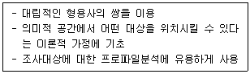
- 어의차이척도(semantic differential scale)
- 서스톤척도(Thurstone scale)
- 리커트척도(Likert scale)
- 스타펠척도(Stapel scale)
- 거트만척도(Guttman scale)
(정답률: 알수없음)
48. 비표본오류에 관한 설명으로 옳지 않은 것은?
- 표본추출과는 무관하게 발생하는 오류이다.
- 무응답오류는 비표본오류에 속한다.
- 관찰오류와 비관찰오류로 구분할 수 있다.
- 비표본오류를 줄이면 표본오류도 줄어든다.
- 자료기록 및 처리상에서 발생하는 오류가 이에 속한다.
(정답률: 알수없음)
49. 표본 크기 결정시 고려요소가 아닌 것은?
- 표본추출방법의 유형
- 조사하고자 하는 변수의 분산
- 외생변수
- 요구되는 신뢰수준
- 허용오차
(정답률: 알수없음)
50. 과학적 연구의 특징으로 옳지 않은 것은?
- 직관성
- 논리성
- 결정성
- 일반화가능성
- 검증가능성
(정답률: 알수없음)
51. 표본 크기에 관한 설명으로 옳지 않은 것은?
- 모집단의 이질성이 증가할수록 표본 크기는 커야 한다.
- 추정치에 대해서 높은 신뢰수준을 원할수록 표본크기는 커야 한다.
- 표본 크기가 클수록 표본 오차도 증가한다.
- 비확률표본추출 시 표본 크기는 예산과 시간에 따라 조사자가 판단한다.
- 통계적 분석기법에 따라 필요한 표본 크기가 달라진다.
(정답률: 알수없음)
52. 표본추출방법에 관한 설명으로 옳지 않은 것은?
- 일반적으로 확률표본추출방법은 비확률표본추출방법에 비해 모집단에 대한 대표성이 높다.
- 비확률표본추출방법은 각 표본추출단위가 표본으로 추출될 확률이 사전에 알려져 있지 않다.
- 층화표본추출법은 모집단을 다수의 상호독립된 동질적 소그룹으로 구분하여 각각의 소그룹에서 무작위로 표본을 추출한다.
- 군집표본추출법은 모집단이 여러 개의 소그룹으로 구성되어 있을 때, 각각의 그룹에서 편의적으로 표본을 추출한다.
- 할당표본추출법은 비확률표본추출법에 속한다.
(정답률: 알수없음)
53. 표본추출과정을 순서대로 바르게 나열한 것은?
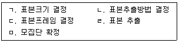
- ㄱ-ㄴ-ㄷ-ㄹ-ㅁ
- ㄱ-ㄴ-ㄷ-ㅁ-ㄹ
- ㅁ-ㄱ-ㄷ-ㄴ-ㄹ
- ㅁ-ㄷ-ㄴ-ㄱ-ㄹ
- ㅁ-ㄹ-ㄷ-ㄴ-ㄱ
(정답률: 알수없음)
54. 실험 과정에서 첫 번째 측정의 경험이 두 번째 측정에 영향을 주는 것은?
- 성숙효과
- 시험효과
- 측정도구의 변동
- 통계적 회귀
- 실험목적에 대한 예상
(정답률: 알수없음)
55. 대인면접조사에 관한 설명으로 옳은 것은?
- 비구조화된 대인면접조사는 수집자료의 신뢰도가 높다.
- 면접자와 조사대상자가 친밀한 관계를 유지하는 것을 프로빙(probing)이라고 한다.
- 새로운 사실이나 아이디어 발견을 위해서는 구조화된 대인면접조사가 적합하다.
- 우편조사에 비해 응답률이 높고 조사대상자의 익명성을 보장하기 어렵다.
- 구조화된 대인면접조사의 경우 응답자의 특성과 상황에 맞도록 질문과정을 유연하게 진행할 수 있다.
(정답률: 알수없음)
56. 자료에 관한 설명으로 옳은 것은?
- 2차 자료란 조사자가 현재 수행중인 조사문제를 해결하기 위해 직접 수집한 자료다.
- 1차 자료는 2차 자료에 비해 인력과 시간, 비용이 절감된다는 장점이 있다.
- 1차 자료는 도서관 자료, 연구문헌자료 등을 통해 수집된다.
- 2차 자료는 당면한 조사문제 해결에 적합한 정보를 충분히 제공하지 못할 수 있다.
- 의사소통방법과 관찰법은 대표적인 2차 자료수집방법에 속한다.
(정답률: 알수없음)
57. 패널조사에 관한 설명으로 옳지 않은 것은?
- 특정 조사대상자들을 선정해놓고 반복적으로 실시하는 조사방식을 의미한다.
- 종단적 조사의 성격을 지닌다.
- 반복적인 조사 과정에서 성숙효과, 시험효과가 나타날 수 있다.
- 조사대상의 상표전환율과 같은 구매행동 변화를 추적할 수 있다.
- 횡단조사에 비해 모집단 대표성 확보와 신뢰성 있는 정보 수집이 어렵다.
(정답률: 알수없음)
58. 자료 수집 방법에 관한 설명으로 옳지 않은 것은?
- 정확한 행동 측정이 중요한 경우에는 서베이법보다 관찰법이 유용하다.
- 관찰법은 행동의 내면 동기를 파악할 수 있다는 장점이 있다.
- 심층면접법과 표적집단면접법은 정성적 조사 방법에 속한다.
- 심층면접법과 표적집단면접법은 탐색적 조사에 많이 활용된다.
- 면접의 유형은 크게 구조화된 면접과 비구조화된 면접으로 나눌 수 있다.
(정답률: 알수없음)
59. 판매원 채용시험성적이 판매원으로서의 근무성과를 평가하는데 적정한가를 나타내는 것은?
- 수렴타당성
- 기준타당성
- 내용타당성
- 이해타당성
- 판별타당성
(정답률: 알수없음)
60. 측정과정에서 신뢰성을 높이기 위한 방법에 관한 설명으로 옳지 않은 것은?
- 응답자에 따라 다양한 면접방식을 적용한다.
- 측정항목의 모호성을 제거한다.
- 측정항목의 수를 늘린다.
- 응답자가 모르는 내용은 측정하지 않는다.
- 다른 연구에서 검증된 측정도구를 사용한다.
(정답률: 알수없음)
61. (주)한국제과는 광고비, 영업사원수, 근무시간이 매출액 증가에 미치는 영향을 알아보고자 한다. 이 때 유용한 자료분석 기법은?
- 교차분석
- 단순상관분석
- 요인분석
- 다중회귀분석
- 판별분석
(정답률: 알수없음)
62. C사에서는 세 가지 판매원 교육프로그램을 개발하여 판매원을 무작위로 세 그룹으로 나누어 교육을 실시하였다. 교육이후 그룹별 판매원 실적을 분석하여 세 프로그램의 효과차이를 알고자 할 때 적합한 통계분석방법은?
- 독립표본T검증
- 카이제곱독립성검증
- 분산분석
- 판별분석
- 상관관계분석
(정답률: 알수없음)
63. 회귀분석에 관한 설명으로 옳지 않은 것은?
- 독립변수와 종속변수의 인과관계를 분석하는 것이다.
- 독립변수와 종속변수는 모두 등간척도 혹은 비율척도로 측정되어야 한다.
- 다중회귀분석의 경우 독립변수들간의 다중공선성이 존재하면 독립변수와 종속변수의 정확한 관계파악이 어렵다.
- 결정계수는 0과 1 사이의 값을 가진다.
- 도출된 회귀식을 통해 종속변수의 값을 예측할 수 있다.
(정답률: 알수없음)
64. 조사결과 보고서 작성 시 고려해야 할 사항으로 옳은 것은?
- 조사를 의뢰한 기업에 불리하게 나온 결과는 포함시키지 않는다.
- 응답자가 설문에 응답을 한 것은 공개에 동의한 것이므로 개인적인 응답도 공개할 수 있다.
- 보고서 전문성 확보를 위해 가능한 조사관련 전문적 용어를 많이 사용하는 것이 좋다.
- 보고서는 의사결정자로 하여금 쉽게 이해할 수 있고 필요한 정보를 모두 포함할 수 있도록 작성해야 한다.
- 조사의 한계를 포함시키는 것은 바람직하지 않다.
(정답률: 알수없음)
65. 조사윤리와 관련한 설명으로 옳지 않은 것은?
- 조사대상자에게 참여를 강요하지 않는다.
- 조사대상자의 사생활을 침해하지 않는다.
- 조사대상자의 신체적 피해나 정신적 불쾌감이 없도록 해야 한다.
- 조사대상자를 존중한다.
- 조사가 끝난 후에는 입수한 자료의 비밀을 유지할 필요가 없다.
(정답률: 알수없음)
66. 실험조건상 조사대상을 실험집단과 통제집단으로 나눌 수 없을 때 주로 사용하는 방법으로, 실험변수를 노출시키기 전후에 일정한 기간을 두고 정기적으로 몇 차례의 결과변수에 대한 측정을 하는 방법은?
- 집단비교설계
- 시계열실험설계
- 솔로몬 4집단 실험설계
- 단일집단 사전사후측정설계
- 통제집단 사전사후측정실험설계
(정답률: 알수없음)
67. 연구 수행 시 가설에 관한 설명으로 옳지 않은 것은?
- 연구의 방향을 제시하여야 한다.
- 수집된 자료를 의미있게 해석할 수 있는 이론적 틀을 제공한다.
- 연구문제를 명제화함으로써 문제의 해결에 요구되는 절차와 방법을 시사해준다.
- 좋은 가설은 후속연구에서 새로운 연구문제와 가설을 도출하는 데 도움을 준다.
- 모든 연구에는 반드시 가설이 포함되어야 한다.
(정답률: 알수없음)
68. 다음 중 기술적 연구방법에 속하는 것은?
- 횡단연구
- 문헌연구
- 전문가의견연구
- 사례연구
- 표적집단면접법
(정답률: 알수없음)
69. 고객, 경쟁사 및 시장에서 벌어지는 일에 관한 일상정보를 수집하고 분석하는 것은?
- 마케팅인텔리전스시스템
- 내부자료시스템
- 마케팅조사시스템
- 고객데이터베이스시스템
- 패널조사시스템
(정답률: 알수없음)
70. 설문조사 시 사전조사(pre-test)에 관한 설명으로 옳은 것은?
- 설문지 문제점을 찾아내기 위한 것으로 본 조사와 동일한 표본 크기로 실시하여야 한다.
- 본 조사 이전 1회 이상 실시하여 본 조사에서 발생할 수 있는 오류를 최소화시킨다.
- 연구문제의 핵심 요소를 분명히 알지 못할 때 설문지 작성 이전 단계에서 실시한다.
- 본 조사와는 달리 간소화된 방식과 절차로 진행한다.
- 응답자의 대표성을 반드시 확보하여야 한다.
(정답률: 알수없음)
71. 서베이 조사 방법에 관한 설명으로 옳은 것은?
- 인과관계 규명보다는 기술과 예측에 중점을 둔다.
- 설문지 작성이 필수적이다.
- 동일표본에 대한 반복적 자료수집에 용이하다.
- 2차 자료를 이용하는 조사방법에 해당한다.
- 현재 직면하고 있는 상황과 유사한 사례를 찾아내어 분석하는 방법이다.
(정답률: 알수없음)
72. 설문지 설계 및 작성 시 고려할 사항으로 옳지 않은 것은?
- 질문내용, 형태 및 순서 등을 결정해야 한다.
- 표본추출방법을 고려해야 한다.
- 자료수집방법을 고려해야 한다.
- 자료분석방법을 고려해야 한다.
- 조사에 필요한 핵심적 정보와 내용을 포괄해야 한다.
(정답률: 알수없음)
73. 설문지 구성 시 질문작성에 관한 일반적인 방법으로 옳지 않은 것은?
- 어렵거나 민감한 질문은 뒤에 배치한다.
- 선택형 질문에는 가능한 모든 응답을 제시해 주어야 한다.
- 응답자 이해를 돕기 위해 질문은 가능한 한 길게 제시한다.
- 유도성 질문은 피해야 한다.
- 한 질문에 두 가지 내용을 질문하지 않아야 한다.
(정답률: 알수없음)
74. 회귀분석에서 반드시 더미(dummy) 변수로 전환하여 분석하여야 하는 변수는?
- 명목척도로 측정된 독립변수
- 서열척도로 측정된 독립변수
- 등간척도로 측정된 독립변수
- 비율척도로 측정된 독립변수
- 비율척도로 측정된 종속변수
(정답률: 알수없음)
75. 서열척도를 이용한 측정방법은?
- 고정총합척도법
- 순위법
- 등급법
- 리커트척도법
- 어의차이척도법
(정답률: 알수없음)
76. 표적집단면접에 관한 설명으로 옳지 않은 것은?
- 피면접자들의 규모는 6~12명 정도가 적당하다.
- 가능하면 비슷한 사회적ㆍ경제적 수준의 사람들로 피면접자들을 구성하는 것이 바람직하다.
- 한 주제에 대하여 다양한 범위의 생각이나 아이디어를 얻을 수 있다.
- 진행자의 역할이 매우 중요하다.
- 조사결과의 일반화가 용이하다.
(정답률: 알수없음)
77. 외생변수의 통제방법이 아닌 것은?
- 제거(elimination)
- 균형화(matching)
- 상쇄(counter balancing)
- 무작위화(randomization)
- 래더링(laddering)
(정답률: 알수없음)
78. 전화조사에 관한 설명으로 옳지 않은 것은?
- 대인면접에 비해 면접원의 영향과 편견을 줄일 수 있다.
- 대인면접에 비해 자료수집 비용이 적게 든다.
- 대인면접보다 응답자의 응답률이 높은 편이다.
- 대인면접보다 많은 정보를 얻기 힘들다.
- 대인면접보다 자료수집 시간이 적게 든다.
(정답률: 알수없음)
79. 요인분석과 군집분석에 관한 설명으로 옳지 않은 것은?
- 요인분석이란 상호연관성을 분석해서 유사한 변수들을 묶어주는 통계기법이다.
- 군집분석이란 일정한 기준에 따라 유사한 속성을 지닌 대상을 몇 개의 집단으로 구분한다.
- 요인분석을 통해 측정의 타당성을 평가할 수 있다.
- 군집분석을 통해 각 군집의 특성을 설명해주는 정보를 얻을 수 있으며, 군집분류의 통계적 유의수준도 확인할 수 있다.
- 요인분석은 다수의 변수들을 소수의 차원으로 축약하면서도 정보손실을 최소화할 수 있는 통계기법이다.
(정답률: 알수없음)
80. 특정한 관심대상이 어느 집단에 속하는지를 예측하는 모형을 개발하는 데에 사용되는 분석방법은?
- 분산분석
- 회귀분석
- 판별분석
- 컨조인트분석
- 다차원척도법
(정답률: 알수없음)
3과목: 영어
81. 밑줄 친 부분과 의미가 가장 가까운 것은?
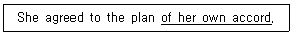
- pleasantly
- voluntarily
- seriously
- reluctantly
- enthusiastically
(정답률: 알수없음)
82. 밑줄 친 단어와 의미가 가장 가까운 것은?
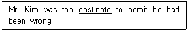
- stubborn
- insolvent
- obscure
- outstanding
- inquisitive
(정답률: 알수없음)
83. ( )에 들어갈 표현으로 옳은 것은?
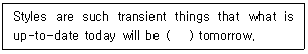
- modern
- fatal
- archaic
- strict
- false
(정답률: 알수없음)
84. 밑줄 친 부분과 의미가 가장 가까운 것은?
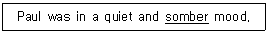
- holy
- dirty
- bright
- dismal
- exuberant
(정답률: 알수없음)
85. 밑줄 친 단어와 의미가 가장 가까운 것은?
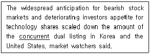
- ostensible
- harmonious
- dissenting
- recurrent
- simultaneous
(정답률: 알수없음)
86. 밑줄 친 부분과 의미가 가장 가까운 것은?
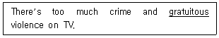
- unnecessary
- intense
- familiar
- justified
- fake
(정답률: 알수없음)
87. 밑줄 친 부분의 동의어로 옳은 것은?
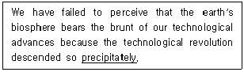
- opaquely
- precariously
- explicitly
- suddenly
- posthumously
(정답률: 알수없음)
88. 밑줄 친 부분 중 어법상 옳지 않은 것은?
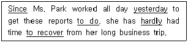
- Since
- yesterday
- to do
- hardly
- to recover
(정답률: 알수없음)
89. 어법상 옳은 것은?
- She felt that she could never to go home again.
- I must admit that I am not accustomed to speak to a machine.
- The manager said that the shop was not responsible for these types of complaints.
- She objected to have to wait.
- The most of us eat meat about once a week.
(정답률: 알수없음)
90. (A), (B), (C)의 각 괄호 안에서 어법에 맞는 낱말로 옳은 것은?
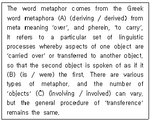
- (A): deriving, (B): were, (C): involving
- (A): derived, (B): were, (C): involving
- (A): deriving, (B): is, (C): involved
- (A): derived, (B): is, (C): involving
- (A): derived, (B): were, (C): involved
(정답률: 알수없음)
91. ( )에 들어갈 표현으로 옳은 것은?
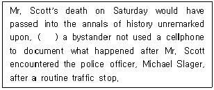
- had
- as
- should
- unless
- if
(정답률: 알수없음)
92. ( )에 들어갈 표현으로 옳은 것은?
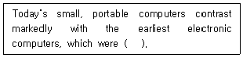
- invaluable
- flawless
- expensive
- efficient
- enormous
(정답률: 알수없음)
93. ( )에 들어갈 표현으로 옳은 것은?
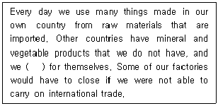
- have some that they cannot supply
- have none that they can supply
- have some that they can supply
- have any that they can supply
- have not any that they can supply
(정답률: 알수없음)
94. 밑줄 친 부분 중 어법상 옳지 않은 것은?
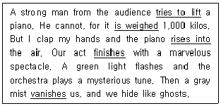
- tries to lift
- is weighed
- rises into
- finishes
- vanishes
(정답률: 알수없음)
95. 밑줄 친 부분 중 어법상 옳지 않은 것끼리 연결된 것은?
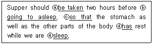
- ⓐ, ⓑ
- ⓐ, ⓒ
- ⓑ, ⓔ
- ⓒ, ⓓ
- ⓓ, ⓔ
(정답률: 알수없음)
96. ( ) 안에 들어갈 표현은?
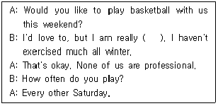
- out of order
- out of shape
- out of sight
- out of mind
- out of date
(정답률: 알수없음)
97. ( )에 알맞은 것은?
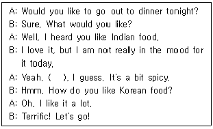
- So do I
- Neither am I
- Not much
- Same to you
- Never mind
(정답률: 알수없음)
98. 대화의 내용이 자연스럽지 않은 것은?
- A: Porter, can you help me with my bags?
B: No problem, sir. - A: Isn't this weather great?
B: You're right. It isn't. - A: Would you like to see them in another size?
B: Yes, please. - A: How's your new job?
B: So-so. - A: I've had a terrible cough all week.
B: I'm sorry to hear that.
(정답률: 알수없음)
99. 밑줄 친 부분을 우리말로 바르게 옮긴 것은?
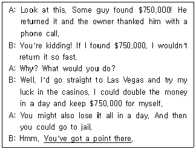
- 너도 돈을 벌 수 있다.
- 내가 번 돈의 일부를 너에게 주겠다.
- 말도 안 되는 소리 하지 마라.
- 너는 늘 부정적으로 생각한다.
- 네 말에 일리가 있다.
(정답률: 알수없음)
100. ( )에 들어갈 표현으로 옳은 것은?
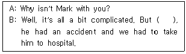
- to put it another way
- to make things worse
- to cut a long story short
- to hear him talk
- to do it on his own
(정답률: 알수없음)
101. 밑줄 친 부분과 의미가 같은 표현을 고르시오.
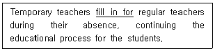
- take care of
- stand up for
- look up to
- cover for
- compete with
(정답률: 알수없음)
102. 다음 대화의 ( )에 들어갈 말로 가장 적절한 것은?
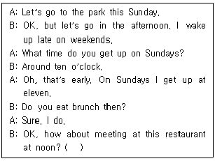
- They serve breakfast until eleven o'clock.
- They serve brunch until two o'clock.
- They don't serve brunch at all.
- They don't serve lunch all day.
- They don't serve breakfast at all.
(정답률: 알수없음)
103. 다음 대화의 빈 칸 ⓐ, ⓑ에 들어갈 말로 옳은 것은?
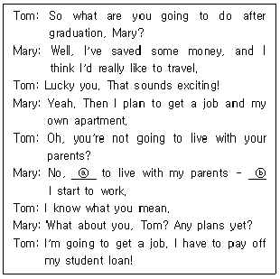
- ⓐ: I want, ⓑ: after
- ⓐ: I don't want, ⓑ: before
- ⓐ: I want, ⓑ: before
- ⓐ: I do want, ⓑ: not after
- ⓐ: I don't want, ⓑ: not after
(정답률: 알수없음)
104. 다음 속담에 관한 설명으로 옳은 것은?
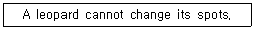
- 어른을 공경해야 한다.
- 방심은 금물이다.
- 습관은 제2의 천성이다.
- 지혜는 용맹을 이긴다.
- 타고난 천성은 고칠 수 없다.
(정답률: 알수없음)
1⑤. 빈 칸 ⓐ, ⓑ에 들어갈 표현으로 옳은 것은?
- ⓐ: how old are you, ⓑ: how old you are
- ⓐ: how old you are, ⓑ: how old are you
- ⓐ: how old you are, ⓑ: how you are old
- ⓐ: how you are old, ⓑ: how old are you
- ⓐ: how you are old, ⓑ: how old you are
(정답률: 알수없음)
106. ( )에 들어갈 옳은 표현을 보기에서 고르시오.
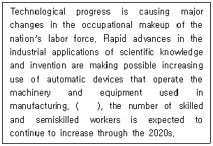
- In addition
- As a result
- For instance
- Nevertheless
- By all means
(정답률: 알수없음)
107. ( )에 들어갈 단어로 옳은 것은?
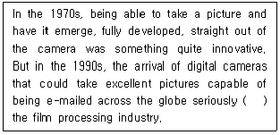
- enhanced
- ameliorated
- triggered
- eroded
- accelerated
(정답률: 알수없음)
108. 주어진 문장을 문맥에 따라 순서에 맞게 배열하시오.
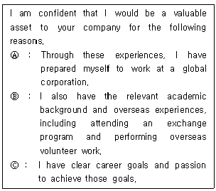
- Ⓐ - Ⓑ - Ⓒ
- Ⓐ - Ⓒ - Ⓑ
- Ⓑ - Ⓐ - Ⓒ
- Ⓑ - Ⓒ - Ⓐ
- Ⓒ - Ⓑ - Ⓐ
(정답률: 알수없음)
109. 우리말을 영어로 옮긴 문장 중에서 옳지 않은 것은?
- 귀하의 친절에 진심으로 감사드립니다.
Please, accept my heartfelt thanks for your kindness. - 앞으로 계속 승승장구하시기를 기원합니다.
Best wishes for your continued success in the future. - 문의해 주셔서 다시 한 번 감사드립니다. 앞으로 저희가 귀하에게 도움이 되기를 바랍니다.
Thank you again for your inquiry. We hope that we can be of service to you in the future. - 다음에 또 이용해주시기 바랍니다.
We look forward to the possibility of serving you again. - 귀하와 서신을 주고받을 수 있는 기회를 얻게 되어 정말 기쁩니다.
We are delightful to have this opportunity to correspond with you.
(정답률: 알수없음)
110. 다음 글에 관한 설명으로 옳은 것은?
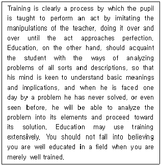
- Education is to become only a part of training.
- Education is to learn how to memorize problems, rather than to analyze them.
- Education is to become acquainted with performing an act by imitation.
- Education is to be keen to understand basic meanings and implications.
- Education is to perform an act over and over until the act approaches perfection.
(정답률: 알수없음)
111. 다음 글의 주제로 가장 적절한 것은?
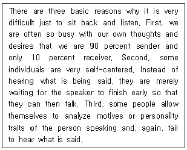
- We should speak to others politely.
- We should analyze the way others speak.
- We should express our thoughts and desires.
- We should try to listen to what others say.
- We should get our thoughts organized.
(정답률: 알수없음)
112. 어법상 옳은 것은?
- I will reward whomever can solve this problem.
- They gradually became to enjoy their English lessons.
- Though I understood what he said, I found it difficult to make myself understood.
- When the time came to pay the bill, she had found her purse was stolen.
- The rain prevented me to go to the party.
(정답률: 알수없음)
113. ( )에 들어갈 가장 적절한 단어를 고르시오.
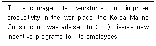
- discontinue
- institute
- discard
- cooperate
- deduct
(정답률: 알수없음)
114. 지문을 읽고, ( )에 들어갈 단어를 고르시오.
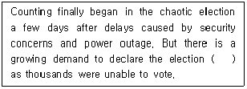
- official
- justifiable
- valid
- void
- legitimate
(정답률: 알수없음)
115. 다음 ( )에 알맞은 것은?
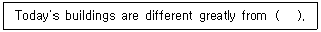
- the past
- this of the past
- that of the past
- those of the past
- those who from the past
(정답률: 알수없음)
116. 다음 빈 칸에 들어갈 가장 적절한 내용은?
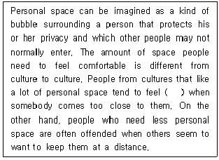
- awkward and embarrassed
- excited and curious
- stupid and exhausted
- bored and depressed
- comfortable and relaxed
(정답률: 알수없음)
117. 다음 문구가 사용되는 사례로 적절한 것은?
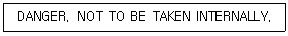
- On a tube of ointment
- On a pile of papers
- On a book in a library
- On a carton of frozen food
- On a bottle of pills
(정답률: 알수없음)
118. 다음 글의 내용으로 옳지 않은 것은?
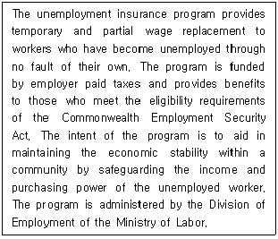
- Taxes are levied on employers for the program.
- A woman who loses her job due to chronic lateness receives benefits.
- The purpose of the program is to maintain economic stability.
- The Commonwealth Employment Security Act provides the eligibility requirements for the program.
- The program is to protect the purchasing power of those who have lost their jobs.
(정답률: 알수없음)
119. 다음 글의 주제로 적합한 것은?
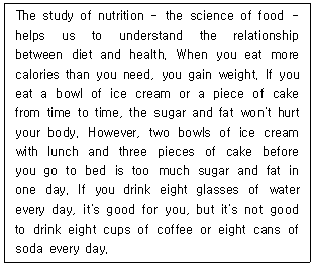
- Effect of Diet on Health
- Study on Animal's Body
- Good and Bad Sides of Food
- Nutritionist and Dietician
- Study on Science
(정답률: 알수없음)
120. 아래 지문의 내용과 일치하는 것을 고르시오.
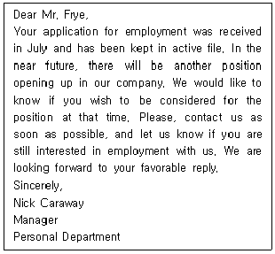
- 제출된 입사지원서는 곧 반송될 예정이다.
- 지원자는 회사를 퇴직 후 재입사를 원하고 있다.
- 인사담당자는 지원자에게 한 번 더 입사시험에 응시할 기회를 주려고 한다.
- 모든 제출된 서류는 일회만 사용가능하여, 지원서를 다시 제출해야 한다.
- 지원자는 지난 7월에 입사 후 곧 퇴사하였다.
(정답률: 알수없음)